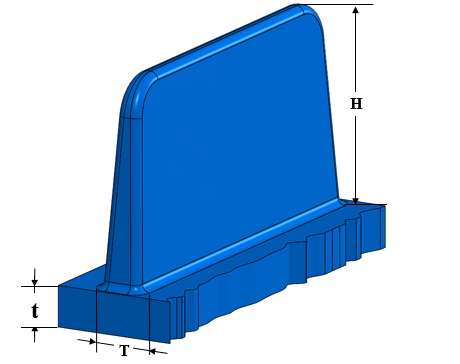
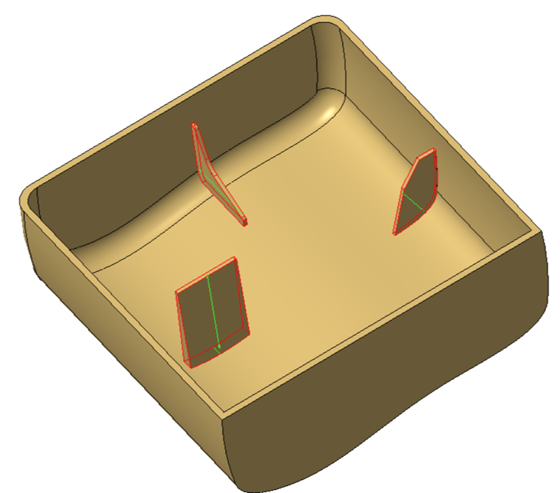

リブのパラメータは、製造容易性と所望の品質の部品を得るための推奨事項に従う必要があります。
プラスチック部品では、リブは長手方向に沿った突起として追加されます。リブにはいくつかの目的があります。部品の強度を高めたり、部品設計の装飾的な特徴として機能させたりできます。リブは最小肉厚を維持しながら、成形部品を剛性化し強化できます。また、リブは部品の反りを最小化することもできます。
しかし、リブのような突起は、キャビティ充填、ベント（排気）、および突出し（エジェクション）の問題を引き起こす可能性があります。これらの問題は、背の高いリブほど厄介になります。リブは、ショートショットなどの欠陥を避け、必要な強度を得るために、正しい比例関係で設計する必要があります。厚く深いリブは、それぞれヒケ（シンクマーク）や充填問題を引き起こす可能性があります。深いリブは突出しの問題につながることもあります。リブが長すぎる場合は、支持リブが必要になることがあります。1本の大きなリブ（ボイドやヒケを招く可能性があります）を使用するよりも、多数の小さなリブを使用する方が望ましいです。
一般に、推奨されるリブ高さは公称肉厚の3倍を超えないこととされています。同様に、リブ根元の厚さは公称肉厚のおよそ0.6倍程度とするのが推奨されます。

ここでは、
H = リブの高さ
t = 公称肉厚
T = リブ根元の厚さ
注記:
リブ高さは、リブ支持面の法線方向に沿った最大高さとして算出されます。
